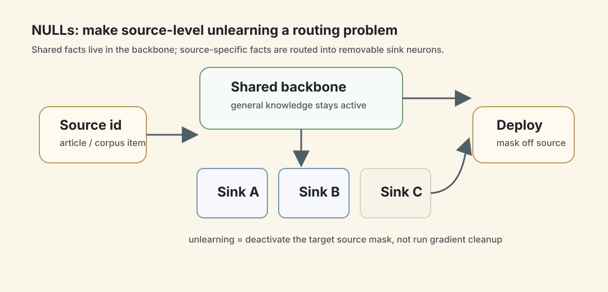
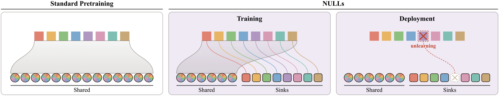
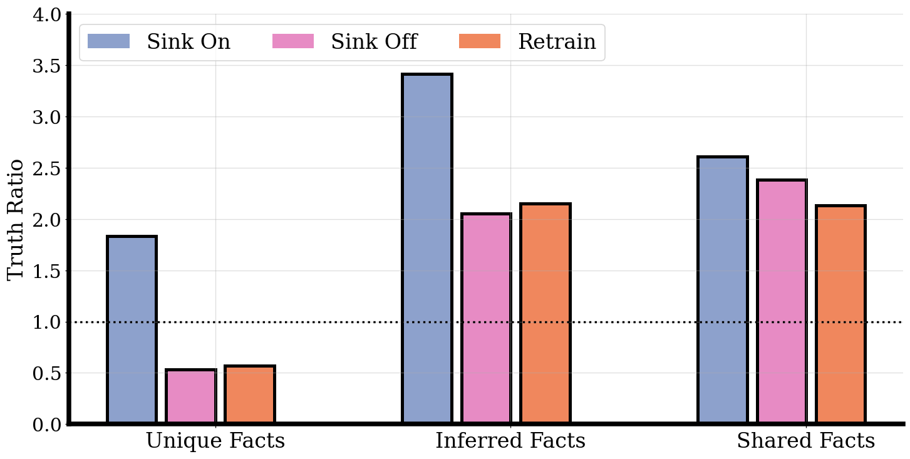
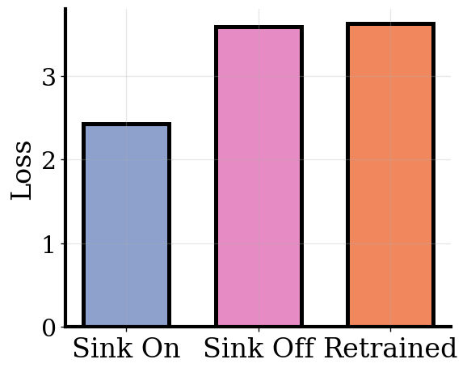

NULLs：把“可遗忘性”做进模型，而不是训练完再补救
- Paper: Natively Unlearnable Large Language Models
- Version: arXiv v1, 2026-06-11
- 类型: native unlearning architecture / source-level data control / model safety
- 关键词: NULLs, memorization sinks, source masks, sink-off, retraining baseline, Harry Potter unlearning, source provenance
读法：给人和 agent 的路标
这篇的关键不是提出一个新的 post-hoc unlearning loss，而是换了问题设定：如果以后一定会有人要求你删除某些训练来源，为什么不在预训练时就把来源贡献隔离出来？
给 agent 之后检索，关键词是：NULLs、Natively Unlearnable LLMs、source-specific sinks、sink-off、truth ratio、Wikipedia 6M articles、Harry Potter relearning attack、N_gen 500 N_pool 8000 N_source 100。
一句话判断
NULLs 的核心思路是让模型同时拥有两套记忆通道：共享 backbone 学跨来源的通用知识，source-specific sink neurons 存每个来源独有的信息；部署时只要不激活某个 source 的 sink，就能近似“像没训练过这个来源一样”，不需要梯度更新，也不需要 retained data。
图表优先读法
| 先看 | 图/表 | 读完应该抓住什么 |
|---|---|---|
| 1 | Figure 1：NULLs overview | source-specific 信息被引导到 sink neurons，共享知识留在 backbone |
| 2 | Wikipedia retraining match | Sink-Off 是否真的接近 gold retraining，是主证据 |
| 3 | Harry Potter / adversarial extraction | topic-level unlearning 和攻击鲁棒性是边界测试 |
| 4 | General capability 表 | 原生可遗忘不能以牺牲通用能力为代价 |
| 5 | sink overlap / activation | 机制是否真分离来源信息，要看 sink 选择性 |

这张自制图把 NULLs 的机制压成一句话：共享事实留在 backbone，来源独有事实被 source mask 路由到 sink neurons；unlearning 时不是重新训练或梯度清除，而是不再激活目标 source 的 sink。这样后面读 Wikipedia 和 Harry Potter 实验时，能更清楚它为什么强调 source-level routing。
先看架构图

Figure 1 的读法：
- 标准 transformer：所有来源都更新同一组参数，来源贡献混在一起。
- NULLs：每个 source 有一个 deterministic sparse mask，激活共享 backbone 加上 sink pool 的一小部分。
- Unlearning：目标 source 的 mask 不再激活，或者永久清零对应 sink neurons。
这不是 MoE 那种“每个来源一个专家”。NULLs 的 source mask 来自共享 sink pool 的组合子集，所以可以支持非常多来源，而不是参数量随 source 数线性增长。
方法机制
NULLs 只改 transformer 的 MLP hidden activations。标准 LLaMA MLP 类似：
x = silu(fc_1(x)) * fc_2(x)
return proj(x)
NULLs 变成：
x = silu(fc_1(x)) * fc_2(x)
x = x * mask(source_id)
return proj(x)
其中 mask 做两件事：
- 永远激活
N_gen个 shared backbone neurons； - 只激活 sink pool 中由
source_id决定的一小部分N_sourceneurons。
Wikipedia 实验的关键超参：
| 参数 | 值 | 含义 |
|---|---|---|
| model size | 1B | SmolLM-style transformer |
| training | 7 epochs, about 32B tokens | Wikipedia article-level setting |
| sources | about 6M | 每篇 Wikipedia article 一个 source |
N_gen |
500 | shared backbone neurons |
N_pool |
8000 | sink pool size |
N_source |
100 | 每个 source 激活的 sink neurons |
| overlap ratio | 0.013 | source masks 的期望重叠比例 |
作者还做了 cross-document attention masking，避免一个训练 context 里多个文档之间泄漏 sink activation。
为什么 source-specific 信息会进 sink
论文的解释很漂亮：
- 某个 source 独有事实只在这个 source 出现；
- shared backbone 虽然也收到这个事实的梯度，但它同时被所有其他 source 的更新干扰；
- 该 source 的 sink neurons 收到同样信号，但被其他 source 干扰少得多；
- 因此独有事实更快被 sink fit 掉，随后 backbone 上的梯度压力消失；
- 最终 backbone 更倾向存共享知识，sink 更倾向存 source-specific 知识。
这个机制不需要人工标注“哪些事实属于哪个来源”。source label 只用于 mask 路由。
实验 1：Wikipedia 文章级遗忘
作者把约 6M Wikipedia articles 当作独立来源，测“关掉一篇文章的 sink”是否能删除独有事实，同时保留相邻文章里的共享事实。
事实分三类：
| Fact type | 含义 |
|---|---|
| Shared facts | 多个来源都支持的事实 |
| Article-specific facts | 只在目标文章里出现的事实 |
| Unique facts | retrained-without-target 后也预测不出的 article-specific facts |
| Inferred facts | retrained-without-target 仍能通过其他知识推出来的 article-specific facts |

Figure 4 的结论是：Sink-Off 和 gold-standard retraining 很接近。Unique facts 的 truth ratio 降下去，Inferred / Shared facts 保留。这正是 unlearning 想要的行为：删掉来源独有贡献，不做主题级误伤。
对比 post-hoc gradient unlearning，Figure 3(c) 显示 NPO 和 gradient ascent 会让 shared facts 和 article-specific facts 一起下降，说明它们很难把“这篇文章独有的信息”和“相邻文章也支持的信息”分开。
实验 2：Harry Potter topic-level 遗忘
第二个实验把来源定义得更粗：训练 1B 模型在 3.8B tokens 的 C4 + 7 本 Harry Potter books 上，C4 被语义聚成 5000 个 clusters，Harry Potter 作为一个额外 cluster。
结果：
- Sink-On 时，模型在 Harry Potter book text 上 loss 更低，说明相关知识可访问；
- Sink-Off 时，loss 和 cloze QA truth ratio 匹配 retrained-without-Harry-Potter 模型；
- 生成样例中，Sink-On 会继续进入相关实体和设定，Sink-Off 会保持语言连贯但转到无关主题；
- adversarial prompting 下，Sink-Off 的 ACR 接近 retrained；
- relearning attack 下，post-hoc NPO 在少于 10 fine-tuning steps 内被反转，而 NULLs Sink-Off 的 relearning dynamics 接近从未见过该数据的 retrained model。

这部分最重要的不是“它能删 Harry Potter”，而是它说明 native isolation 对 adversarial extraction 和 relearning attack 更稳。post-hoc 方法常常只是把知识压到不容易问出来的位置，NULLs 是从路由上不激活对应来源。
General capability 是否掉了
Table 1 比较 NULLs 和同规模 standard transformer：
| Benchmark | NULLs | Standard |
|---|---|---|
| ARC-E | 0.428 ± 0.009 | 0.434 ± 0.010 |
| Winogrande | 0.530 ± 0.014 | 0.510 ± 0.015 |
| PIQA | 0.643 ± 0.011 | 0.645 ± 0.010 |
| SciQ | 0.639 ± 0.016 | 0.631 ± 0.015 |
| Average | 0.560 ± 0.013 | 0.555 ± 0.013 |
至少在 1B 规模和这四个 benchmark 上，NULLs 没有明显牺牲通用能力。
我怎么判断
可信之处
- 问题设定非常清楚：source-level unlearning 不再靠事后“擦除”，而是预训练阶段就设计可控参数通道。
- 有 retraining baseline：NULLs 和 gold-standard retraining 对齐，这是 unlearning 论文里很重要的证据。
- 有 adversarial/relearning 测试：不只看普通 QA prompt。
- 参数量没有随 6M sources 线性爆炸：mask 的组合性是关键。
需要警惕
- 只验证到 1B 模型：大模型规模、MoE、长上下文、多模态上是否成立还不知道。
- source 必须预先定义：如果删除请求和训练时 source boundary 不一致，NULLs 不能自动解决。
- post-training 是开放问题：SFT/RL 会不会把 source-specific 信息重新写进 backbone 或新 head，论文没有解决。
- 路由本身是系统问题：推理时要知道或估计该激活哪个 source sink，多 source prompt 可能不适合单一 nearest-sink routing。
对我的价值
这篇对个人知识库/数据治理有一个很强的启发：可删除性是数据结构问题，不只是删除命令问题。
对应到 wiki/paper-reading：
- 每篇 note、每张图、每个引用都应该有 provenance；
- 知识合成时要能追溯到 source；
- 如果以后要删除某个来源，最好别让它早就被无结构地揉进所有总结里。
对模型训练也是一样：如果法律、隐私、版权要求 source-level control，那就不能指望训练完再用一个 loss 修干净。
一句话收束
NULLs 这篇最有意思的是提出了一种“训练时即治理”的视角：让模型从一开始就带着来源边界学习，而不是等模型变成一锅粥后再试图把某个成分捞出来。